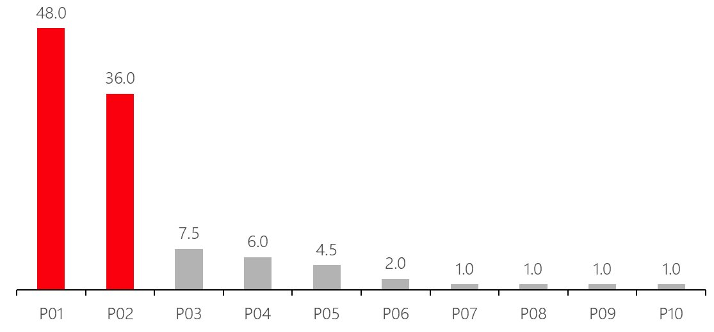
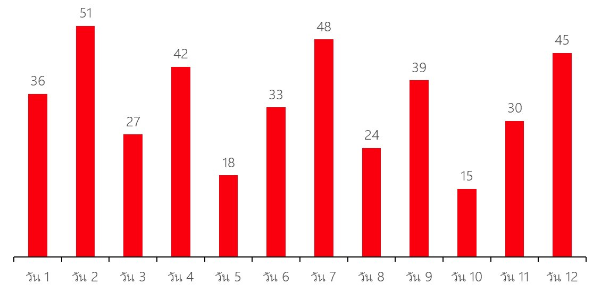

2.1 สินค้าคงคลัง และแบบจำลองเสมือนจริง
2. สินค้าคงคลังและแบบจำลองเสมือนจริงด้วย Plant Simulation · ภาคทฤษฎี
วัตถุประสงค์การเรียนรู้
- จัดกลุ่มสินค้าแบบ ABC และคำนวณ EOQ, Safety Stock และจุดสั่งซื้อ (ROP) ได้
- จัดวางสินค้าและอ่านกราฟสต็อกเพื่อหาปัญหาของขาดหรือสั่งเกินได้
- อธิบายหลักการ Discrete-Event Simulation และบอกว่า Object ใน Plant Simulation แทนอะไรในคลังจริง
เริ่มจากตัวเลข: เดิน 5.1 กม. → 1.5 กม. ต่อวัน
ในแบบจำลองสยามพาร์ท พนักงานหยิบ 1 คนเดินวันละ 5.1 กิโลเมตร เพราะสินค้าขายดีที่สุดถูกวางไว้ไกลสุดตามลำดับรหัส พอย้ายสินค้ากลุ่มที่หยิบบ่อยมาไว้ใกล้จุดส่ง ระยะเดินเหลือ 1.5 กิโลเมตร ลดลง 70 % โดยไม่ซื้อเครื่องจักรสักเครื่อง — บทนี้คือวิธีคิดว่าสินค้าตัวไหนสำคัญ ควรมีเท่าไร สั่งเมื่อไร และวางไว้ที่ไหน
1. สินค้าคงคลัง
ทำไมต้องมีสต็อก และต้องจ่ายอะไรบ้าง
| เหตุผลที่ต้องมีสต็อก | ต้นทุน 3 ก้อน | เป้าหมาย |
|---|---|---|
| ยอดใช้แกว่ง ไม่รู้ล่วงหน้า ของต้องรอผู้ขายส่ง (lead time) สั่งทีละมากถูกกว่า ค่าขนส่งน้อยกว่า |
ค่าสั่งซื้อ (S) เอกสาร รถ ตรวจรับ ต่อครั้ง ค่าเก็บรักษา (H) เงินจม พื้นที่ ประกัน เสื่อม ค่าของขาด ไลน์หยุด ค่าปรับ เสียลูกค้า — แพงที่สุด |
ไม่ขาด ไม่ล้น ต้นทุนรวมต่ำสุด ตอบ 3 คำถาม: อะไรสำคัญ · สั่งเท่าไร · สั่งเมื่อไร |
ABC: สินค้า 2 รหัสจาก 10 รหัส = 78 % ของมูลค่า
การวิเคราะห์ ABC มาจากหลักพาเรโต — ของไม่กี่อย่างมีผลมากที่สุด เรียงสินค้าตามมูลค่าต่อปี = ยอดใช้ต่อปี × ราคาต่อพาเลท แล้วดูสัดส่วนสะสม

กลุ่ม A — P01, P02
2 รหัส · 70 % ของพาเลท · 78 % ของมูลค่า (84 จาก 108 ล้านบาท) → ดูแลใกล้ชิด เผื่อสต็อก วางใกล้
กลุ่ม B — P03–P05
สะสมถึง 94 % → ดูแลปานกลาง
กลุ่ม C — P06–P10
5 รหัส มูลค่ารวม 6 % → กฎง่าย ๆ สั่งครั้งละมาก
EOQ: สั่งครั้งละเท่าไรจึงประหยัดที่สุด
D = ยอดใช้ต่อปี (พาเลท) · S = ค่าใช้จ่ายต่อการสั่ง 1 ครั้ง (บาท) · H = ค่าเก็บรักษาต่อพาเลทต่อปี (บาท)
สั่งบ่อยทีละน้อย → เสียค่าสั่งซื้อหลายครั้ง · สั่งก้อนใหญ่ → ของค้างนาน เสียค่าเก็บ · EOQ คือจุดที่สองค่ารวมกันต่ำสุด
ตัวอย่าง P01 ชุดเบาะ: D = 24 พาเลท/วัน × 250 วัน = 6,000 · S = 200 บาท · H = 20 % ของราคา 8,000 = 1,600 บาท/ปี
EOQ = √(2 × 6,000 × 200 ÷ 1,600) = √1,500 ≈ 39 พาเลทต่อครั้ง
Safety Stock และจุดสั่งซื้อ (ROP): สั่งเมื่อไร
d = ยอดใช้เฉลี่ยต่อวัน · L = ระยะเวลารอของ (วัน) · σ = ความแกว่งของยอดใช้ต่อวัน (ส่วนเบี่ยงเบนมาตรฐาน) · z = ระดับบริการ (1.65 = มีของพอ 95 % ของรอบ)
ระหว่างรอของมาต้องมีของใช้พอ ส่วนแรกคือยอดใช้ระหว่างรอ (d × L) แต่ยอดใช้จริงแกว่ง จึงต้องมีสต็อกเผื่อ (Safety Stock) กันไว้
ตัวอย่าง P01: d = 24 · L = 1 วัน · σ = 30 % ของ d = 7.2
SS = 1.65 × 7.2 × √1 = 11.9 ≈ 12 · ROP = 24 × 1 + 12 = 36
อ่านว่า เมื่อของในคลังรวมของที่สั่งแล้วเหลือ 36 พาเลท ให้สั่ง 39 พาเลทตาม EOQ
ผลคำนวณทั้ง 10 รหัส: ค่าที่จะใส่ในแบบจำลอง
| รหัส | กลุ่ม | ใช้ต่อวัน (d) | EOQ (สั่งครั้งละ) | Safety Stock | ROP (สั่งเมื่อเหลือ) |
|---|---|---|---|---|---|
| P01 | A | 24 | 39 | 12 | 36 |
| P02 | A | 18 | 34 | 9 | 27 |
| P03 | B | 5 | 20 | 3 | 8 |
| P04 | B | 4 | 18 | 2 | 6 |
| P05 | B | 3 | 16 | 2 | 5 |
| P06 | C | 2 | 16 | 1 | 3 |
| P07–P10 | C | 1 ต่อรหัส | 11 | 1 | 2 |
กลุ่ม C สั่งครั้งละ 11 พาเลทแต่ใช้วันละ 1 พาเลท แปลว่าสั่งประมาณ 2 สัปดาห์ครั้ง ส่วนกลุ่ม A สั่งเกือบทุกวัน
สต็อกเฉลี่ย ≈ EOQ ÷ 2 + Safety Stock ≈ 123 พาเลท → ชั้นวาง 150 ช่องพอ แต่ไม่เหลือมาก
— ค่าเหล่านี้จะใส่ในตาราง Products ของแบบจำลองในบท 2.3
นโยบายสั่งซื้อ 2 แบบที่ใช้บ่อย
| ตรวจตลอด (Continuous Review · s, Q) | ตรวจตามรอบ (Periodic Review · T, S) | |
|---|---|---|
| วิธี | ตรวจสต็อกทุกครั้งที่จ่ายของ เหลือถึงจุดสั่งซื้อ (s = ROP) → สั่งเท่าเดิมทุกครั้ง (Q = EOQ) | ตรวจทุก T วัน เช่น ทุกวันจันทร์ แล้วสั่งให้เต็มถึงระดับเป้า S (จำนวนไม่เท่ากันทุกครั้ง) |
| เหมาะกับ | กลุ่ม A — ต้องมีระบบนับแม่นยำ | กลุ่ม C — ง่าย รวมสั่งหลายรหัสพร้อมกันได้ แต่ต้องเผื่อสต็อกมากกว่า |
ในแบบจำลองของเราใช้แบบแรก: Method ตรวจทุกครั้งที่หยิบ (บท 2.3)
2. จัดวางและแสดงข้อมูลสต็อก
จัดวางสินค้า (Slotting): วางตรงไหนให้เดินน้อยที่สุด
- ของหยิบบ่อยไว้ใกล้ — เรียงตามจำนวนครั้งที่หยิบ ไม่ใช่ตามรหัส กลุ่ม A ใกล้จุดส่ง กลุ่ม C ไกล (สยามพาร์ท: 5.1 → 1.5 กม./วัน)
- ความสูงที่เหมาะ — ของหยิบบ่อยไว้ระดับเอว–ไหล่ (Golden Zone) ของหนักไว้ชั้นล่าง ลดการก้ม เอื้อม และอุบัติเหตุ
- จัดกลุ่มที่หยิบคู่กัน — สินค้าที่มักอยู่ในออเดอร์เดียวกันไว้ใกล้กัน และทบทวนตำแหน่งเมื่อยอดขายเปลี่ยน
เมื่อสินค้ามีมาก การลองทุกตำแหน่งเป็นไปไม่ได้ — ในบท 3.3 ใช้ Genetic Algorithm ช่วยหา
แสดงข้อมูลสินค้าคงคลัง: กราฟสต็อกที่ดีเป็น "ฟันเลื่อย"

อ่านกราฟสต็อก
- ขึ้น = ของมาถึง · ลง = ใช้ของ
- แตะศูนย์ → ของขาด: ROP ต่ำไป
- สูงขึ้นเรื่อย ๆ → สั่งเกิน: EOQ หรือ ROP สูงไป
ในแบบจำลองแสดงสต็อก 3 แบบ: Chart (กราฟ), ตาราง StockLog และตัวเลขบนหน้าจอ
กรณีศึกษา (สมมติ): ABC + จุดสั่งซื้อในงานจริง
บริษัท ค. ผู้ผลิตชิ้นส่วนรถ — เดิมทุกรหัสใช้กฎเดียวกัน สินค้าขายดี (A) จึงขาดบ่อย แต่สินค้าขายช้า (C) ล้นชั้น บริษัทแบ่ง ABC ตั้งจุดสั่งซื้อและสต็อกเผื่อเฉพาะกลุ่ม A ส่วนกลุ่ม C สั่งตามรอบ ผลคือของขาดลดจาก 15 เหลือ 2 ครั้งต่อเดือน และมูลค่าสต็อกลดลง 20 %
3. เริ่มสร้างแบบจำลอง
Discrete-Event Simulation: จำลองเฉพาะ "เหตุการณ์"
- เหตุการณ์ (Event) — เช่น รถมาถึง ขนลงเสร็จ ออเดอร์เข้า รถถึงจุดหมาย ระหว่างเหตุการณ์ไม่มีอะไรเปลี่ยน โปรแกรมจึงกระโดดจากเหตุการณ์หนึ่งไปอีกเหตุการณ์ได้ทันที
- เร็วมาก — 1 วันทำงานของสยามพาร์ทรันเสร็จในเสี้ยววินาที ลองได้หลายร้อยแบบในไม่กี่นาที เหมาะกับการทดลองและ AI
- ต่างจาก Excel — Excel ใช้ค่าเฉลี่ย ไม่เห็นคิวและการรอ ค่าเฉลี่ยบอกว่าท่ารับ 2 ท่ารับรถ 6 คันได้สบาย แต่ถ้ารถมาพร้อมกัน การจำลองจะเห็นว่ามีคนรอ 40 นาที
ขั้นตอนโครงการจำลอง
- 1กำหนดปัญหา — คำถามคืออะไร KPI ไหนตอบ เป้าหมายเท่าไร
- 2เก็บข้อมูล — ผังคลัง เวลาทำงาน ออเดอร์ รถเข้า
- 3สร้างโมเดล — Object + ตาราง + Method
- 4Verification — สร้างถูกตามที่ตั้งใจไหม
- 5Validation — ผลใกล้ของจริงไหม
- 6ทดลอง — ปรับค่า หาค่าที่เหมาะสม
- 7นำเสนอ — ตัวเลข + ภาพ 3D
Object ใน Plant Simulation แทนอะไรในคลังจริง
| Object | คลังจริงของสยามพาร์ท | ตั้งค่าที่สำคัญ |
|---|---|---|
| Source | รถผู้ขายนำพาเลทเข้ามา | ตารางเวลาเข้า (Delivery table) · ชนิดสินค้า |
| Buffer | พื้นที่พักขาเข้า / คิวรถหน้าท่า | ความจุ |
| Station / ParallelStation | ท่ารับ ตรวจรับ หยิบ | เวลาทำงาน · จำนวนท่า |
| Store | ชั้นวาง 150 ช่อง | ขนาด X × Y (คอลัมน์ × ชั้น) |
| Drain | ไลน์ประกอบที่รับของ | นับจำนวนที่ส่งถึง |
| DataTable · Variable | ข้อมูลแบบ WMS: สินค้า ออเดอร์ สต็อก | Products · Orders · StockLog |
| Method | กฎการทำงาน: เก็บเข้าช่อง หยิบ สั่งซื้อ | เขียนสั้น ๆ ด้วย SimTalk |
| EventController · ShiftCalendar | นาฬิกาและกะทำงาน 08:00–17:00 | เวลาจบ · พักเที่ยง |
| Chart | กราฟสต็อก / utilization | ค่าที่จะแสดง |
สร้างคลังเองทีละขั้น
ภาคปฏิบัติต่อจากนี้สร้างคลังของเราเองต่อกันทีละขั้น แต่ละไฟล์คือสภาพหลังจบขั้นก่อนหน้า ทำไม่ทันก็เปิดไฟล์ของบทถัดไปได้เลย
- 12.2 สร้างคลังสินค้าแรก — เพิ่ม Library HBW วาด Conveyor วาง RackLane + WMS แล้วรันครั้งแรก
- 22.3 ป้อนข้อมูลสินค้าเข้า – ออก, Method และการแสดงข้อมูลสินค้าคงคลัง — รอบการนำออก สินค้า 2 ชนิด กลยุทธ์จัดเก็บ และ Method
- 32.4 คน และกะทำงาน — เครื่องที่ต้องมีคนคุม คนขนของ ช่าง และกะทำงาน